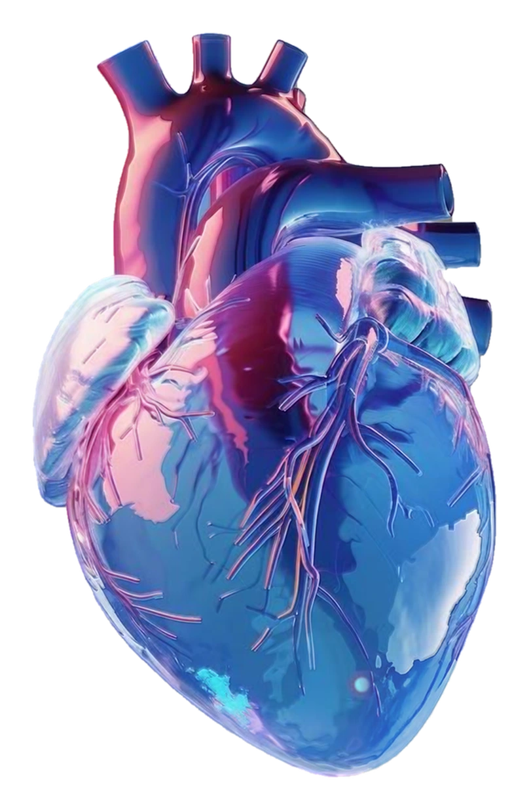

SpO297%
Not enough
information
about sleep
Quality
Time
The secret to a healthy heart
A healthy heart is the basis for a long
and active life. Here are some key
secrets that help maintain a healthy.
Heart healthoverview
The valveis not working perfectly!
See more